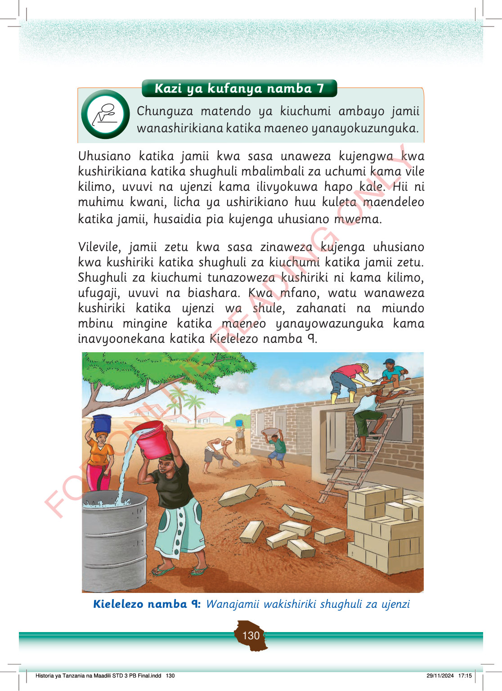

Kazi ya kufanya namba 7
Chunguza matendo ya kiuchumi ambayo jamii wanashirikiana katika maeneo yanayokuzunguka.
Uhusiano katika jamii kwa sasa unaweza kujengwa kwa kushirikiana katika shughuli mbalimbali za uchumi kama vile kilimo, uvuvi na ujenzi kama ilivyokuwa hapo kale.
Hii ni muhimu kwani, licha ya ushirikiano huu kuleta maendeleo katika jamii, husaidia pia kujenga uhusiano mwema.
Vilevile, jamii zetu kwa sasa zinaweza kujenga uhusiano kwa kushiriki katika shughuli za kiuchumi katika jamii zetu.
Shughuli za kiuchumi tunazoweza kushiriki ni kama kilimo, ufugaji, uvuvi na biashara.
Kwa mfano, watu wanaweza kushiriki katika ujenzi wa shule, zahanati na miundo mbinu mingine katika maeneo yanayowazunguka kama inavyoonekana katika Kielelezo namba 9.
Wanajamii wanashirikiana kujenga nyumba. Wengine wanabeba maji, wanachimba udongo, wanapandisha tofali na kufanya kazi juu ya jengo.
Kielelezo namba 9: Wanajamii wakishiriki shughuli za ujenzi